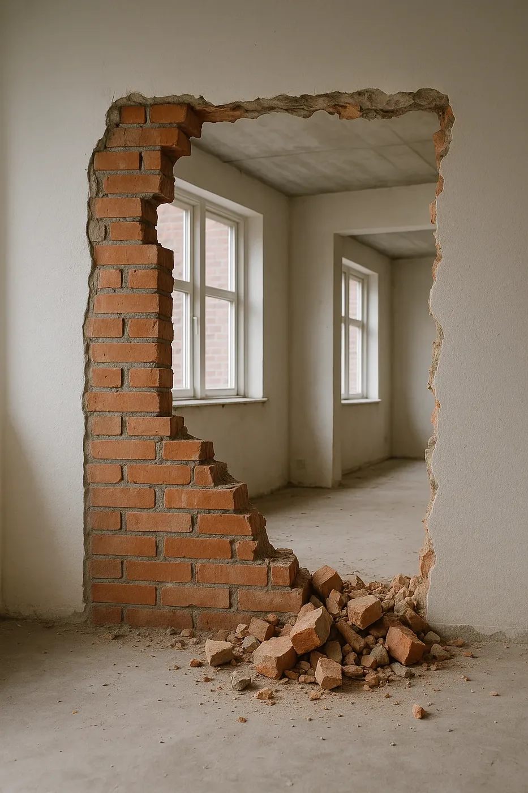
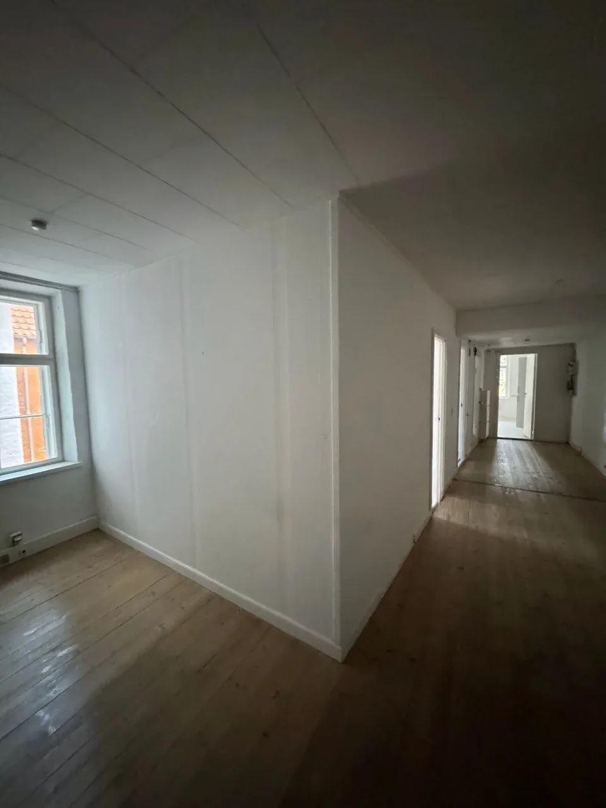
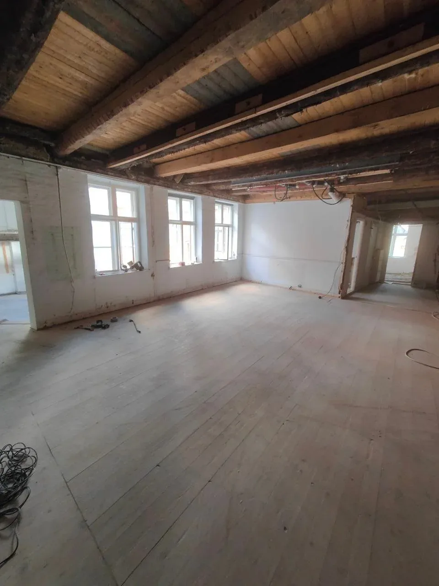

Gipsvæg
299kr/m²
- Nedrivning af gipsvæg
- Fjernelse af skelet
- Sortering af affald
- Bortskaffelse af byggeaffald
Vi fjerner gipsvægge, murvægge og betonvægge hurtigt, sikkert og med fuld bortskaffelse. Fast pris pr. m² – du ved, hvad det koster, før vi går i gang.

Træk i skyderen for at se før og efter vores arbejde.


FørEfterPrisen afhænger af væggens materiale og sværhedsgrad. Ingen skjulte gebyrer – ærlig pris, professionelt arbejde og fuld oprydning.
Alle priser er vejledende. Du får altid en fast, skriftlig pris efter en gratis vurdering – enten ud fra billeder eller et besøg.
Vil du have et åbent køkken-alrum eller slå to værelser sammen? Vi fjerner lette skillevægge og murvægge og rydder op samme dag.
Skal en bærende væg fjernes, skal der først laves en statisk beregning af en ingeniør, og der sættes bjælke op efter hans anvisning. Vi står for nedrivningen og kan koordinere med ingeniøren.
Fra første opkald til ryddet plads – med én fast pris og én kontaktperson.
Du sender en forespørgsel via formularen eller ringer til os.
Vi vurderer opgaven og giver dig et gratis og uforpligtende tilbud.
Vi aftaler pris, vilkår og en startdato, der passer dig.
Vi nedriver væggen kontrolleret og uden unødige skader.
Alt affald fjernes, og rummet efterlades rent.
Nedrivning handler ikke kun om at rive ned. Det handler om at gøre det sikkert for dig, dine naboer og vores folk – og at affaldet ender det rigtige sted.
Anmeldelser fra vores Google-profil.
“Fik revet en gammel mur ned hurtigt og problemfrit. Meget professionelle, og prisen var fair. Tak for det gode arbejde!”
“Vi var meget tilfredse med Yurii og hans teams arbejde. Vi endte med at bruge dem til flere opgaver, og deres priser var meget rimelige – også når opgavens omfang ændrede sig.”
“Godt, hurtigt og professionelt arbejde. De bedste anbefalinger her fra.”
Kan du ikke finde svaret? Ring på 22 12 32 77.
Gipsvæg 299 kr/m² og murvæg/betonvæg 449 kr/m², inkl. oprydning og bortskaffelse.
Ja, men kun efter en statisk beregning fra en ingeniør. Bærende vægge må ikke fjernes uden den rette understøtning.
Vi afdækker og skærmer af, så støvet holdes i rummet, og vi rydder op samme dag.
Send et par billeder og en kort beskrivelse. Vi svarer inden for 24 timer med en fast pris.
Vi river alt ned – fra en enkelt væg til et helt hus.